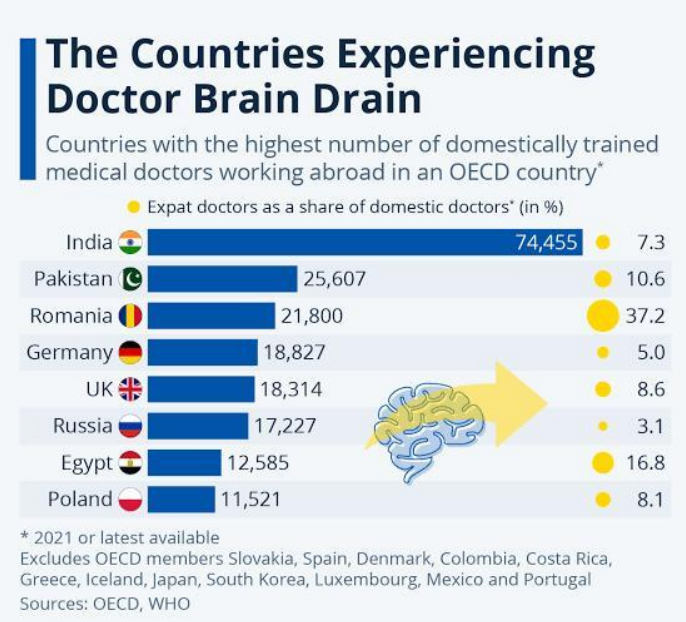

One of the biggest barriers that Bharat has to break as it marches towards its aim of becoming a developed nation by 2047 is 'BRAIN DRAIN'. You surely would have heard or even have someone in your extended family who has gone abroad for jobs. This is what is known as Brain Drain, the loss of a highly trained and skilled population due to emigration to other countries.
Sundar Pichai, Satya Nadella, Indira Nooyi - all these big names that we have heard of are the perfect examples proving the Indian Brain Drain. All of them were born in India, gained a major part of their education from India, and left India for better job opportunities and quality higher education.
Data suggest that about 9 lakh Indian nationals have given up their Indian citizenship since 2015 and 23000 millionaires have given up their Indian citizenship since 2014. In today's scenario, every financially stable Indian Household aspires to send their children, to study abroad, to work abroad. Now the term NRI has changed from 'Non-residential Indians' to 'Never-returning Indians'. But the question is what is the cause of this problem? There are many answers to this question. The first reason is - Better Higher Education- In India, the share of the government's expenditure on Higher Education is very minimal and the main concentration of expenditure is only on elementary education. Secondly, there is a lack of economic opportunities and the Indian economy is unable to produce sufficient high-paying jobs for its skilled population. The quality of life in other developed countries is quite better than that in India. Also, there is a lack of research infrastructure.
Now, coming to the solutions to these problems and the necessary government steps to transform this brain drain into brain gain. First of all, the government will have to divert its expenditure towards tertiary education and set up quality higher education institutions like IITs, NLUs, and IIMs. The government would also have to make sure that the main aim of these courses is gaining skills that are important to avail high-paying skilled jobs. The government will also have to create more job opportunities in the professional sector – doctors, engineers, etc. Apart from this, the government will have to focus on improving the quality of life in the country. The Overseas Citizenship of India which is being provided by the government to the People of Indian origin is an important policy towards transforming brain drain into brain gain as more and more Indian-Origin people will be re-availing of their Indian citizenship.
In a nutshell, this problem of Brain Drain is like a termite to the Indian Economic development and as India marches towards its 100 years of independence, it will have to make sure that it is able to retain its skilled workforce and employ them in the country itself to make Bharat a developed economy.

This blog is written by Tanav Bhatia.

Empowering Students for a Bright Future...